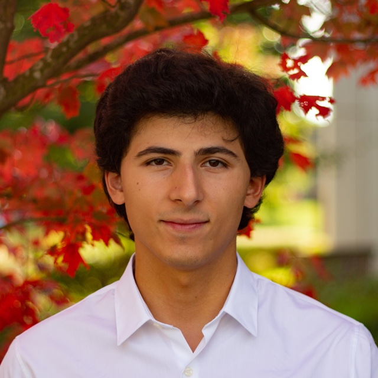
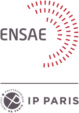
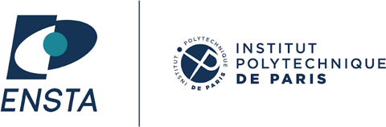
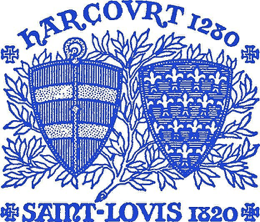
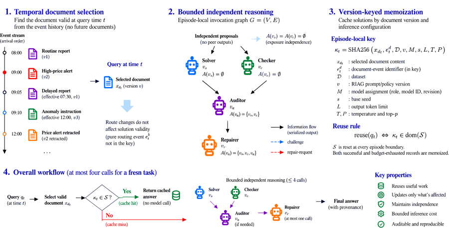
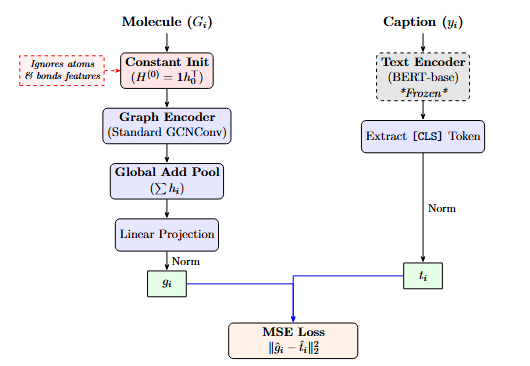
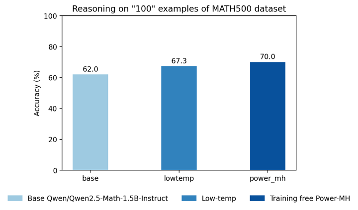
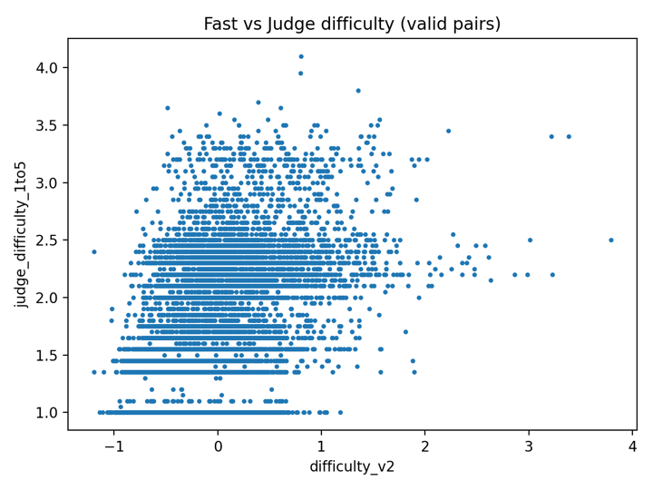

Harvard AI & Robotics Lab
April 2026–PresentVisiting Research Intern, supervised by Dr. Mengyu Wang and Yan Luo, PhD
Cambridge, MA
Master’s Student — École Polytechnique, ENSTA Paris · Visiting Research Intern, Harvard AI and Robotics Lab
Paris, France
I am a master’s student at École Polytechnique and ENSAE Paris, with a Master of Science in Engineering at ENSTA Paris, all part of Institut Polytechnique de Paris. My background is in applied mathematics, optimization and machine learning.
I am currently a visiting research intern at the Harvard AI and Robotics Lab, working with Dr. Mengyu Wang and Dr. Yan Luo on multi-agent reasoning with large language models and on vision-language models for medicine. Before that, I was a machine learning research intern at the Neural Systems and Machine Learning Lab at UC Berkeley, supervised by Dr. Kristofer E. Bouchard.
My most recent work is RIAG, a revision-aware agent graph for multi-agent LLM reasoning, of which I am co-first author.
Visiting Research Intern, supervised by Dr. Mengyu Wang and Yan Luo, PhD
Cambridge, MAInstitut Polytechnique de Paris
Master 2 in Data Science, Applied Mathematics and Statistics

Institut Polytechnique de Paris
Master 2 in Statistics, Machine Learning and Quantitative Finance

Institut Polytechnique de Paris
Diplôme d’ingénieur – Master of Science in Engineering

Classes Préparatoires aux Grandes Écoles
Intensive two-year undergraduate program in mathematics and physics

Y. Luo*, S.-A. Lali*, J. Moebel*, I. Khoutaibi, A. Aidara, M. Wang

DaSciM Team, LIX, École Polytechnique
Graph-to-text models that describe a molecule in natural language from its graph: GNN–text retrieval, then generation with a GNN encoder and BART/GPT-2 decoders. Kaggle data challenge at École Polytechnique, test score 0.619 (top 10%).

Reproduction on MATH500 of training-free power sampling (Karan and Du, 2025), which improves a base model’s reasoning at inference time by changing how responses are sampled.

English-to-Japanese translation: difficulty scored with fast features and an LLM judge, easy-to-hard and hard-to-easy curricula, and LoRA fine-tuning of NLLB under each ordering.
Open-weight vision-language models (Qwen3-VL, MedGemma, LLaVA-Med) fine-tuned with LoRA to write, from a fundus photograph, the clinical description an ophthalmologist would record.
A recurrent neural network with a biologically inspired feedback control mechanism to simulate neural dynamics, combining neuronal gain modulation and Hebbian learning.